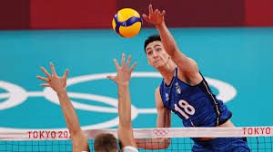

Alessandro Michieletto is an Italian professional volleyball player known for his exceptional skills as an outside hitter. Born on August 2, 2001, in Trento, Italy, Michieletto has quickly risen to prominence in the world of volleyball due to his impressive athleticism, powerful spikes, and versatility on the court. He began his professional career with Trentino Volley, one of Italy's top volleyball clubs, where he has showcased his talent in both domestic and international competitions. Michieletto has also been a key player for the Italian national team, contributing to their successes in various tournaments. His ability to read the game, combined with his strong offensive and defensive skills, has made him one of the most promising young talents in volleyball today. As of 2024, Alessandro Michieletto continues to make significant strides in his career and is regarded as one of the future stars of the sport.
